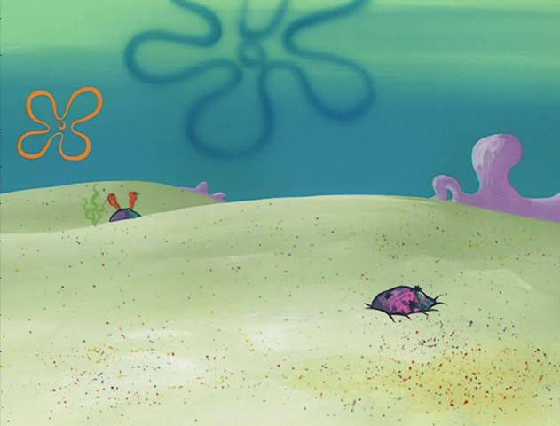

// notes
Undergraduate course notes
Scribed lecture notes from selected UC Berkeley courses — the ones I sat down and wrote up properly, rather than everything I've taken. Free to read and share; if you spot an error, let me know.
MATH 202A
Topology and Analysis
Notes from the Fall 2026 offering at UC Berkeley, written as the course runs and still in progress — metric and topological spaces, compactness and completeness, and the start of measure theory. Read-only Overleaf link, updated as I go. EE 226BApplications of Stochastic Process Theory
Complete scribed lecture notes from Thomas Courtade's Spring 2026 offering at UC Berkeley. 81 pages across 24 lectures, from martingales and the Itô integral through SDEs; also listed as EL ENG 226B and EECS 226B. EE 226ARandom Processes in Systems
Complete scribed lecture notes from Thomas Courtade's Fall 2025 offering at UC Berkeley. 117 pages across 28 lectures, from measure-theoretic probability through Markov chains and sequential hypothesis testing; also listed as EL ENG 226A and EECS 226A.
You've reached the bottom. More notes as I write them up.